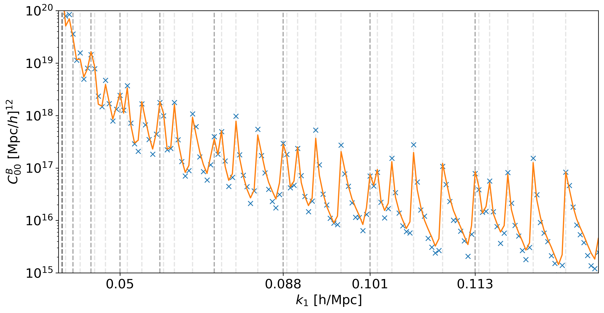

Bispectrum Module#
The bispectrum module (bk) computes contributions to the galaxy bispectrum in redshift space, including wide-separation and relativistic corrections.
The bispectrum output is available as multipole moments or the full angle-dependent local bispectrum.
Bispectrum Multipoles#
The bispectrum can be expanded in terms of the “Scoccimarro” spherical harmonic multipoles, which are defined with respect to the orientation of the triangle to the line-of-sight.
Here’s an example class from the bispectrum module:
- class bk.NPP#
This class computes the Newtonian plane-parallel constant redshift terms.
Methods#
- lx(cosmo_functions, k1, k2, k3=None, theta=None, zz=0, r=0, s=0, sigma=None)#
Compute the x-th multipole ( l_x ) of the bispectrum for the Newtonian contribution.
- Parameters:
cosmo_functions (object) – An instance of ClassWAP containing cosmology and survey biases.
k1 (array-like) – Wavevector magnitude 1, broadcastable array in units of [Mpc/h].
k2 (array-like) – Wavevector magnitude 2, broadcastable array in units of [Mpc/h].
k3 (array-like) – (Optional) Wavevector magnitude 3, broadcastable array in units of [Mpc/h]. Either k3 or theta must be set.
theta (array-like) – (Optional) Outside angle θ, broadcastable array. Either theta or k3 must be set.
zz (array-like) – Redshift, broadcastable array with k vectors. Default is 0.
r (float) – Parameter r that sets the Line of Sight (LoS) in the local triplet. Default is 0.
s (float) – Parameter s that sets the Line of Sight (LoS) in the local triplet. Default is 0.
sigma (float) – (Optional) Linear dispersion that sets FoG damping. Default is None.
- Returns:
Bispectrum multipole contribution in units of [h/Mpc]^6.
- ylm(l, m, cosmo_functions, k1, k2, k3=None, theta=None, zz=0, r=0, s=0, sigma=None)#
Compute the multipole (ell,m) of the bispectrum by performing the angular integral numerically.
- Parameters:
l (int) – The degree of the spherical harmonic.
m (int) – The order of the spherical harmonic.
cosmo_functions (object) – An instance of ClassWAP containing cosmology and survey biases.
k1 (array-like) – Wavevector magnitude 1, broadcastable array in units of [Mpc/h].
k2 (array-like) – Wavevector magnitude 2, broadcastable array in units of [Mpc/h].
k3 (array-like) – (Optional) Wavevector magnitude 3, broadcastable array in units of [Mpc/h]. Either k3 or theta must be set.
theta (array-like) – (Optional) Outside angle θ, broadcastable array. Either theta or k3 must be set.
zz (array-like) – Redshift, broadcastable array with k vectors. Default is 0.
r (float) – Parameter r that sets the Line of Sight (LoS) in the local triplet. Default is 0.
s (float) – Parameter s that sets the Line of Sight (LoS) in the local triplet. Default is 0.
sigma (float) – (Optional) Linear dispersion that sets FoG damping. Default is None.
- Returns:
Bispectrum multipole contribution in units of [h/Mpc]^6.
Available Bispectrum Classes#
CosmoWAP provides multiple classes for different contributions to the bispectrum:
NPP: Newtonian plane-parallel (Kaiser)
WA1: First-order wide-angle corrections
WA2: Second-order wide-angle corrections
RR1: First-order radial-redshift corrections
RR2: Second-order radial-redshift corrections
WS: Full combined wide-separation terms (wide-angle + radial-redshift)
GR1: First-order relativistic corrections (H/k)
GR2: Second-order relativistic corrections (H/k)
Loc, Eq, Orth: PNG contributions (local, equilateral, orthogonal)
Note
PNG contributions (Loc, Eq, Orth) require compute_bias=True when initialising ClassWAP.
Each class follows the same interface with lx() methods for computing multipoles of order x, and a ylm() method for numerical integration of arbitrary multipoles.
LOS parameters (r, s): The line-of-sight direction d for the local triplet is defined as:
where r, s ∈ [0,1] and x_i are the triplet positions. Default r=s=0 corresponds to the “midpoint” LOS.
Full Local Bispectrum#
In addition to the multipole decomposition, CosmoWAP also provides functions to compute the full angle-dependent local bispectrum.
- bk.Bk_0(mu, phi, cosmo_functions, k1, k2, k3=None, theta=None, zz=0, r=0, s=0, sigma=None)#
Compute the angle-dependent Newtonian bispectrum.
- Parameters:
mu (float) – Cosine of the angle between the LOS and (k_1)
phi (float) – Azimuthal angle between LOS and (k_2) in plane normal to (k_1).
cosmo_functions (object) – An instance of ClassWAP containing cosmology and survey biases.
k1 (array-like) – Wavevector magnitude 1, broadcastable array in units of [Mpc/h].
k2 (array-like) – Wavevector magnitude 2, broadcastable array in units of [Mpc/h].
k3 (array-like) – (Optional) Wavevector magnitude 3, broadcastable array in units of [Mpc/h]. Either k3 or theta must be set.
theta (array-like) – (Optional) Outside angle θ, broadcastable array. Either theta or k3 must be set.
zz (array-like) – Redshift, broadcastable array with k vectors. Default is 0.
r (float) – Parameter r that sets the Line of Sight (LoS) in the local triplet. Default is 0.
s (float) – Parameter s that sets the Line of Sight (LoS) in the local triplet. Default is 0.
sigma (float) – (Optional) Linear dispersion that sets FoG damping. Default is None.
- Returns:
The bispectrum contribution, in units of [h/Mpc]^6.
The full angle-dependent bispectrum is available for the Newtonian contribution. For other contributions, use the multipole decomposition via the class methods.
Bispectrum Gaussian Covariance#
CosmoWAP also provides functionality to compute the Gaussian covariance of the bispectrum multipoles.
- class bk.COV(cosmo_functions, k1, k2, k3, theta, zz, r=0, s=0)#
Compute the Gaussian covariance for bispectrum multipoles.
- Parameters:
cosmo_functions (object) – An instance of ClassWAP.
k1 (array-like) – First wavevector magnitude.
k2 (array-like) – Second wavevector magnitude.
k3 (array-like) – Third wavevector magnitude.
theta (array-like) – Outside angle of the triangle.
zz (float) – Redshift.
r (float) – Parameter r for LOS specification.
s (float) – Parameter s for LOS specification.
Methods#
- Nab_cd()#
Compute the covariance between ℓ1=a, m1=b and ℓ2=c, m2=d multipoles.
The notation is Nab_cd where a, b, c, d are the multipole and m-indices. For example, N00_00 is the covariance of the monopole (ℓ=0, m=0) with itself.
- Returns:
Covariance value.
Comparison with Sims#
Gaussian covariance compared to the measured covariance from 100 fiducial Quijote Quijote sims.
{kind=link}